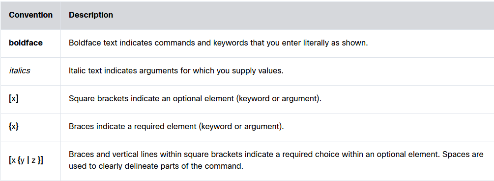
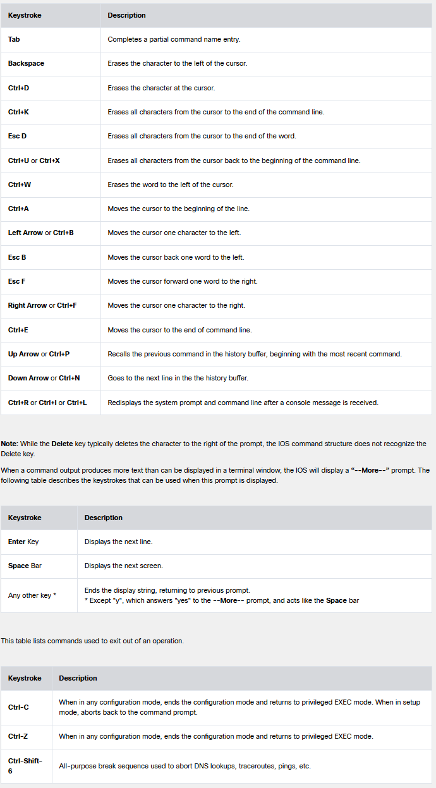
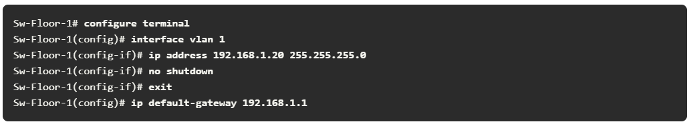
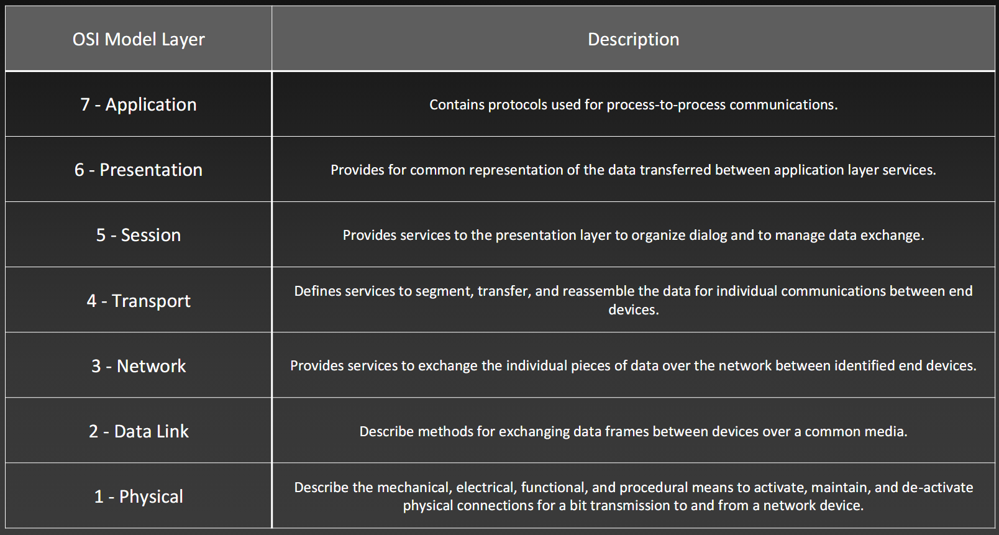
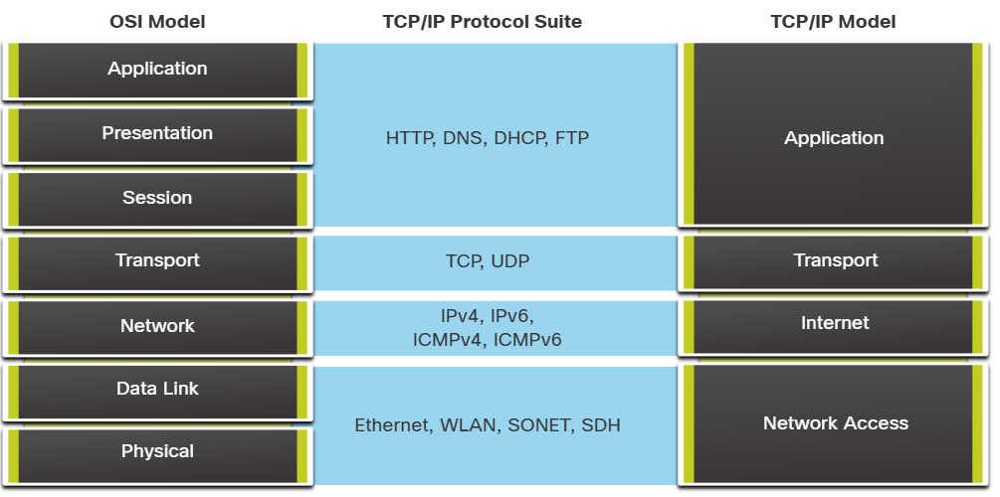
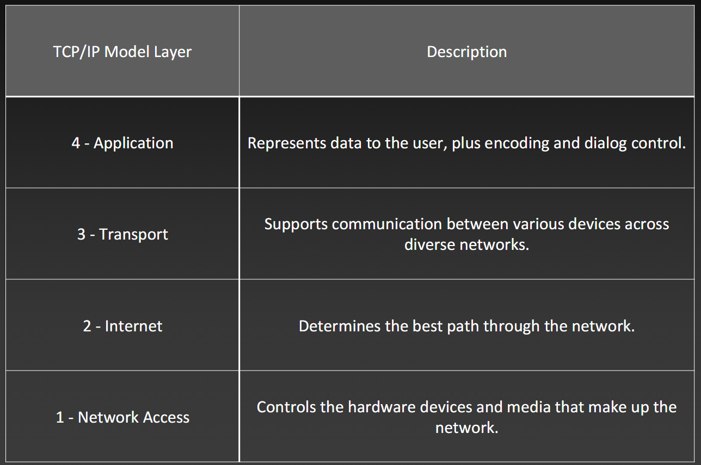

Configure Users using GitBash Commands
Commands
- git config --global user.name "Benjamin Pedrin"
- git config --global user.email "pedrinb@students.westerntc.edu"
- git config --global core.autocrlf true
- git config --global --list
Creating SSH keys
Commands
Creating a new SSH key
- ssh-keygen -t ed25519 -C "pedrinb@students.westerntc.edu"
Start the agent and add the key
- eval "$(ssh-agent -s)"
- ssh-add ~/.ssh/id_ed25519
Print & Copy Public Key
- cat ~/.ssh/id_ed25519.pub
Testing your connection
Help
Syntax Help

Command Modes
Access Methods
- Console
- Physical management port
- Out-of-Band - refers to access via a cable or dedicated management channel used for maintenance only!
- Cable required
- Telnet
- In-Band - Insecure
- Over Network - used once the IP has been configured
- Requires active networking services on the device
- NOT ENCRYPTED
- Secure Shell (SSH)
Mode Changes
- Privileged EXEC
- Configuration Mode
- configure terminal (config t)
- Line Configuration Mode
- Virtual Terminal Configuration Mode
- Interface Configuration Mode
Command Modes
- User EXEC Mode
- View-Only
- Prompt ends with ">"
- Privileged EXEC Mode
- Global Configuration Mode
- Prompt ends with "(config)#"
- Line Configuration Mode
- Prompt ends with "(config-line)#"
- Used to configure console, SSH, Telnet or AUX access
- Interface Configuration Mode
- Prompt ends with "(config-if)#"
- Used to configure a switch, port or router network interface
Mode Commands
- User EXEC Mode Commands
- show
- running-config
- startup-config
- ip interface brief
- version
- interfaces
- ping <IP address>
- traceroute <IP address>
- telnet <IP address>
- ssh <IP address>
- terminal length <lines>
- terminal monitor
- logout
- quit
- exit
- Privileged EXEC Mode Commands
- configure terminal
- boot system
- reload
- cd
- change-password
- connect
- delete
- rename
- resume
- write
- dir
- diff
- format
- factory-reset
- show
- copy
- debug
- erase
- clear
- exit
- Global Configuration Mode Commands
- username <name> privilege <level> secret <password>
- banner motd #message#
- enable secret <password>
- interface
- no ip domain-lookup
- ip domain-name <domain_name>
- service password-encryption
- router
- line
- hostname
- description
- ipv6 address <ipv6_address>/<prefix_length>
- ip address <ip_address> <subnet_mask>
- no shutdown
- shutdown
- end
- exit
Hotkeys & Shortcuts
Hotkeys Cheatsheet

Naming Devices
When naming a device, enter Privileged EXEC Mode on the device and use hostname or no hostname to change the name or return it to it's original prompt name
Configuring Passwords
Password Commands
Setting Passwords
- console password
- line console 0
- password xT6yR
- login
- end (exit can be used to exit line mode)
- enable password
- config t - (enter configuration mode)
- enable password R7gS0e
- exit - (when ready to exit config mode)
- enable secret
- config t - (enter configuration mode)
- enable secret sEd9o7
- exit - (when ready to exit config mode)
- vty password (Virtual Teletype)
- line vty 0 15
- password x8Hc5ja
- login
- end (to return to enable mode); exit (to return to config mode)
To configure different security options for different virtual lines
- line vty 0 4
- password MyPass
- login local
- transport input ssh
- access-class 101 in
- line vty 5 15
- password MyPass
- login local
- transport input ssh telnet
- access-class 102 in
username/password authentication
- Router(config)# username admin secret MyStrongPassword
- Router(config)# line console 0
- Router(config-line)# login local
Do Not Use "enable password" | Use "enable secret"
To clear a password, simply type "NO" before any command
Encryption Commands
Encryption
- service password-encryption
Banner Message
Command
Additional Commands
- no ip domain-lookup
Configurations commands "shortlist"
- show running-config
- show startup-config
- reload
- erase startup-config
- copy running-config startup-config (copy run start)
# Configuring A Virtual Interface
Vlan Config

command: "show ip interface brief"
Reference Models
"lease o ot hrow ausage izza way"
Image of OSI Reference Models


TCP/IP Model

The Physical Layer